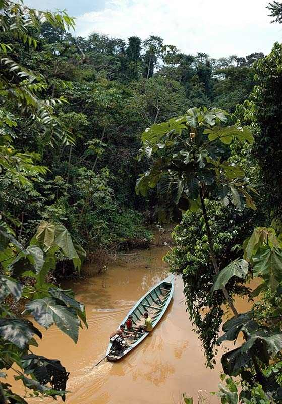

Nossos Projetos


- 


Nosso grupo solidários:
A raposa é um mamífero da família Canidae, conhecida por sua inteligência e agilidade. Seu corpo é esguio, com uma pelagem densa e macia, que pode variar em cores, sendo mais comum em tons de vermelho, laranja e marrom, com uma barriga branca e, às vezes, manchas escuras nas pernas e no rosto. A cauda, uma das suas características mais marcantes, é longa e espessa, frequentemente com uma ponta branca.
Esquilo
O esquilo é um pequeno mamífero da família Sciuridae, que inclui diversas espécies encontradas em diferentes partes do mundo. Eles são conhecidos por sua agilidade, inteligência e hábitos de armazenamento de alimentos.